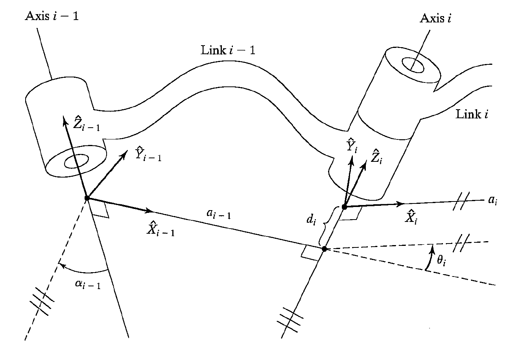

Manipulator Kinematics¶
Joints form a connection between a neighboring pair of links.
Most manipulators have Lower pairs, with joints exhibiting one degree of freedom. Specifically, we have revolute joints and sliding joints called prismatic joints.
Link parameters¶
Any manipulator could be described kinematically by giving the value of 4 quantities for each link. Two describe the link itself, while the other two describe the link's connection to a neighboring link. The definition os mechanisms by means of these 4 quantities is a convention usually called the Denavit-Hartenberg notation.
Link between joints
Here, a link is considered only as a rigid body defining the relationship between two neighboring joint axes ( axis \(i-1\) and \(i\), namely) of a manipulator. Joint axes are defined by lines in space.
We could model kinematics like in the following steps, as a well-known basis of 3-D geometry. That is, there exists a perpandicular vector between any two axes that does not coincide (construct the vector by cross-product). This vector is unique unless both axes are parallel. we could use this vector to measure the link distance between the two axes, denoted by \(a_{i-1}\).
The second parameter to be considered is called link twist, denoted by \(\alpha_{i-1}\). That is, using the plane whose norm vector is the perpandicular vector, we could project neighboring axes onto it and measure the angle between them.
Neighboring links: link-Connection
Neighboring links have a common joint axis, which is usually perpendicular to both of them (links). There are also two parameters to consider bwtween them.
The first is the distance bwtween two neighboring links, which is called link offset, denoted by \(d_i\) (according to axis \(i\)). The second is the angle bwtween them, which is called link angle, denoted by \(\theta_i\).
For revolute joint, \(\theta_i\) is called joint variable while the other 3 are fixed link variables. But for prismatic joints, \(d_i\) is a joint variable while the other 3 are fixed link variables.
Frames¶
In order to describe the location of each link relative to its neighbors, we have to define a frame attached to each link. Assume frame \(\{i\}\) is attached regidly to link \(i\).
Construction of frames
The \(\hat{Z}_i\) of frame \(\{i\}\), is coincident with the joint axis \(i\). The origin of frame \(\{i\}\) is located where link \(i\) intersects the joint axis \(i\). Let \(\hat{X}_i\) points along link \(i\) in a direction from joint axis \(i\) to the next joint axis \(i+1\). Thus \(\hat{Y}_i\) is determined by right-hand principle. Check the following image.

Four parameters measured in frames
Within frames \(\{i-1\}\) and \(\{i\}\), we could interpret the above 4 parameters as follows.
(i) \(a_{i-1}\) equals the distance between \(\hat{Z}_{i-1}\) and \(\hat{Z}_{i}\) measured along \(\hat{X}_{i-1}\).
(ii) \(\alpha_i\) equals the angle from \(\hat{Z}_{i-1}\) to \(\hat{Z}_i\) measured about \(\hat{X}_{i-1}\).
(iii) \(d_i\) equals the distnce between \(\hat{X}_{i}\) and \(\hat{X}_{i-1}\) measured along \(\hat{Z}_{i}\).
(iv) \(\theta\) equals the angle from \(\hat{X}_{i-1}\) to \(\hat{X}_i\) measured about \(\hat{Z}_{i}\).
Calculations using Homogeneous Transform Matrix¶
Equiped with the above knowledge between two frames, we could use homogeneous transform matrix to describe the relationship.
Calculations
We could conceive the relationship between frame \(\{i-1\}\) and \(\{i\}\) as the following transformation. Here we use Euler angles.
(i) move frame \(\{i-1\}\) along \(\hat{X}_{i-1}\) with a distance of \(a_{i-1}\).
(ii) rotate frame \(\{i-1\}\) about \(\hat{X}_{i-1}\) with an angle \(\alpha_{i-1}\).
(iii) move frame \(\{i-1\}\) along \(\hat{Z}_{i-1}\) with a distance of \(d_{i}\).
(iv) rotate frame \(\{i-1\}\) about \(\hat{Z}_{i-1}\) with an angle \(\theta_{i}\).
After the above four steps, frame \(\{i-1\}\) becomes \(\{i\}\).
Using postmultiplication, we have
where the first matrix denote the movement (i) (ii) and the second matrix denote the movement (iii) (iv).
We define \(\{B\}\) as basix frame, which is located at the base of manipulator, and \(\{S\}\) as sttion frame, which is located in a task-relevant location, and \(\{W\}\) as wrist frame, which is affixed to the last link of the manipulator, and \(\{T\}\) as tool frame, and \(\{G\}\) as goal frame. To find tool from station frame, by using chain rule, we have
Inverse Kinematics¶
Given the result matrix \(^0_NT\), how to calculate the corresponding submatrices \({^0_1T}\), \({^1_2T}\), \(\cdots\), \({^{N-1}_NT}\)? That is, we are in a logic direction from Cartesian coordinate to joint coordinate.
Existence of solutions
(i) Workspace.
(ii) Dextrous workspace.
(iii) Reachable workspace.
The solutions could be partitioned in to two broad classes: closed-form solution and numerical solutions.